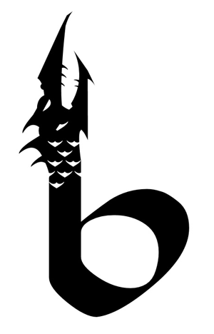

 I love a story, and I especially love sharing that story vocally.
The tradition of oral storytelling is something that resonates with all peoples and cultures across all of history, it is an essential part of each and every one of us. It brings us all together.
If your story needs a voice to help share it, please feel free to contact me. I would love to connect with you.
The tradition of oral storytelling is something that resonates with all peoples and cultures across all of history, it is an essential part of each and every one of us. It brings us all together.
If your story needs a voice to help share it, please feel free to contact me. I would love to connect with you.
Who is the voice of Boojum?
My name is Seth Williams and I am a lifelong lover of speculative fiction and audio storytelling. I am available to narrate your story or script with a practiced and patient voice that highlights the content, not the delivery.
My name is Seth Williams and I am a lifelong lover of speculative fiction and audio storytelling. I am available to narrate your story or script with a practiced and patient voice that highlights the content, not the delivery.